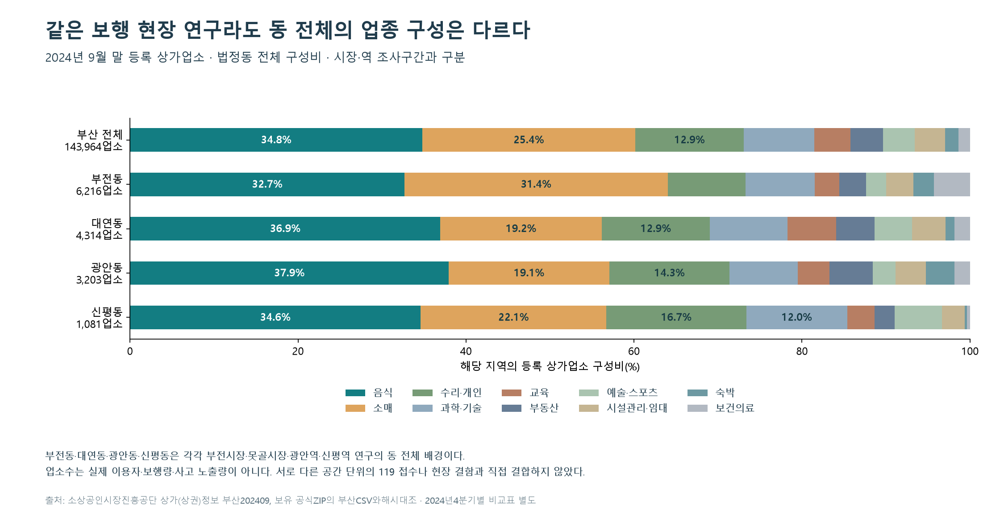

다른 환경의 지역까지
5개 신고 유형과 주민·생활·상권·주택 자료를 지역별로 연결했습니다. 9개 심층 사례의 기존 대응과 보완 내용은 지도 안에서 바로 읽을 수 있습니다.
부산 동별 119 신고 특성에 따른 맞춤형 예방안 제안
5년 신고와 주민 구성, 상권·생활인구·주택·현장 조건을 함께 살폈습니다. 이미 시행한 대응을 반영해 지역별 보완 범위를 정리했습니다.
신고 2020–2024 · 지역 배경·운영자료는 각 기준일 표시 · 실시간 발생 현황 아님

5개 신고 유형과 주민·생활·상권·주택 자료를 지역별로 연결했습니다. 9개 심층 사례의 기존 대응과 보완 내용은 지도 안에서 바로 읽을 수 있습니다.
2020~2023년의 계절 구성을 2024년과 대조했습니다. 407개 비교의 유형별 평균에서 지역별 과거 구성이 단순 기준보다 더 정확하지 않았습니다. 과거 최고 계절만으로 배치를 제안하지 않았습니다.
출처·대상·마감·사업 상태를 연결하는 기능을 실제 검사합니다. 시민의 이해도·서비스 참여·피해 감소는 별도 효과이며, 자동 화면 검사를 그 효과로 바꾸지 않습니다.
소방청의 2025년 자체평가는 데이터 분석·시각화와 현장업무 연계의 보완 필요성을 제시했습니다. 부산의 반복 신고를 출발점으로 서로 다른 자료의 시점과 대상을 맞추고, 기존 서비스의 이용조건과 완료된 정비까지 연결합니다.
정부가 지역 특성을 보지 않았다거나 대응이 없었다고 주장하지 않습니다. 이미 확인한 업무를 재사용하면서, 주민이 보는 지역 결과에 근거·배경·이용 경로를 함께 제공하는 방식입니다.
소방청 공식 자체평가분석한 모든 현재 시각화는 전체 모음에서, 73개 집계표는 내려받기와 미리보기로 제공합니다.
2020–2024 정상 처리·운영성 제외 신고. 아래는 설명 사례이며 위험 순위가 아닙니다. 194개 지역×5유형 전체는 지역 상세에서 탐색합니다.
기본 교육·수료증·실습기자재를 목적과 이용 조건에 맞춰 연결
지역 전체 결과 →과거 보행 조사에 맞이길 정비의 내용과 시점을 함께 표시
지역 전체 결과 →수영로 포장사업과 내부도로의 보차분리 문제를 구분
지역 전체 결과 →기존 매트·울타리 정비와 신고 시기를 함께 제공
지역 전체 결과 →로프·안내 정비와 통제 기간을 구분해 제공
지역 전체 결과 →여름 신고 양상과 기존 해변 운영기간을 함께 제공
지역 전체 결과 →월·계절 결과와 기존 대응을 각각의 기준으로 제공
지역 전체 결과 →주택 배경과 기존 예방교육을 연중 안내에 연결
지역 전체 결과 →주민·주택 배경과 확인된 기존 예방교육을 연결
지역 전체 결과 →부산·16구군·모든 등장 법정동의 업종 구성을 계산했습니다. 같은 분기의 연도 비교와 같은 해의 분기 차이를 확인합니다. 2024년9~12월 목록 규모 차이를 실제 개폐업으로 해석하지 않았습니다.
부전1동 방문 정점14시와 부전2동19시는 2023·2024년 모두 유지됐습니다. 후보 행정동의 주거·직장·방문 배경을 각각 보여줍니다. 2025년은 별도 자료이며 신규 코드의 관측월 수도 구분했습니다.
2026년 국립공원공단의 폭염 취약 구간·쉼터와 통제 안내를 연결했습니다. 과거의 겨울 접수와 현재의 폭염 안내는 구분합니다.
다대포 등 9월13일까지의 특별관리 발표와 해운대 9월15일까지의 당초 운영 계획을 반영했습니다. 확인일에는 기간이 지났으므로 현재 운영 중으로 표시하지 않습니다.
비의무관리 5층 이상 아파트의 무상점검을 기존 대응에 추가했습니다. 6월8일 접수 마감과 6~12월 점검 예정 기간을 구분합니다.
지역별 결과에 배경자료·유효한 이용조건·사업 상태를 연결했습니다. 신규 시설·인력 수량과 사고 감소 효과는 관측하지 않은 값으로 채우지 않았습니다. 이용 경로 선택 정확도·소요시간, 실제 참여·술기, 현장 상태는 각각 별도의 측정 대상으로 구분했습니다.
전체 분석·보완안·검증 범위 읽기 기장·온천의 주택유형 차이
기장·온천의 주택유형 차이